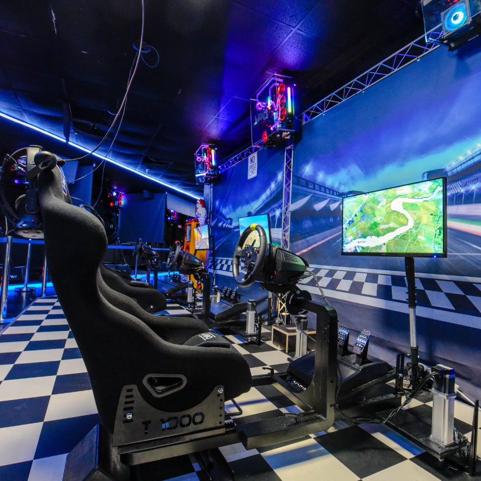
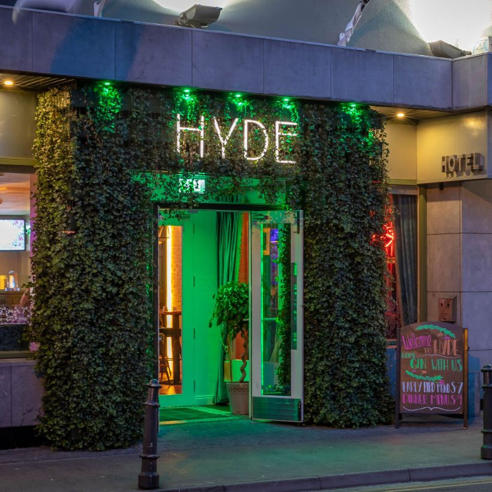
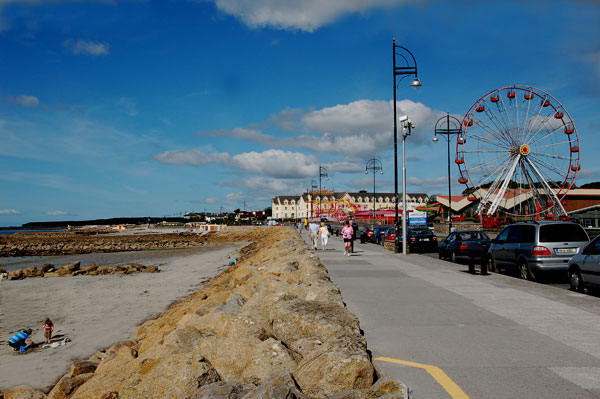
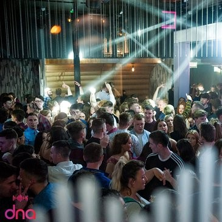
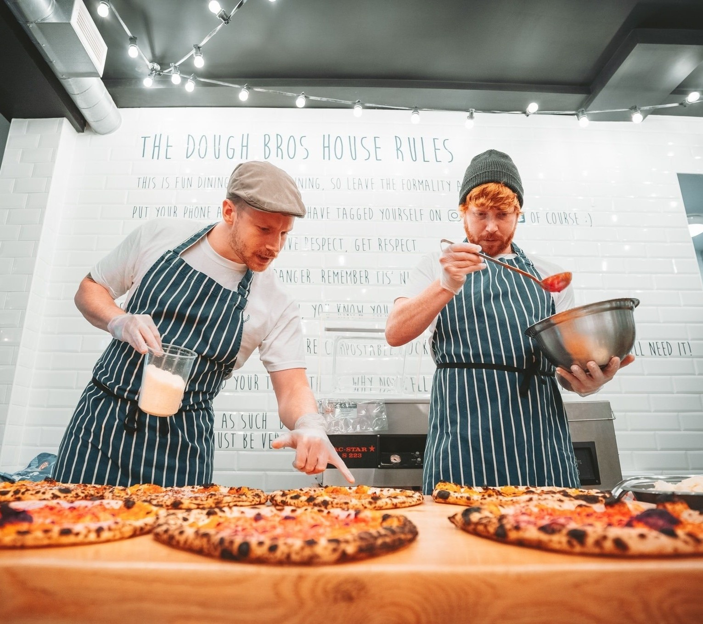
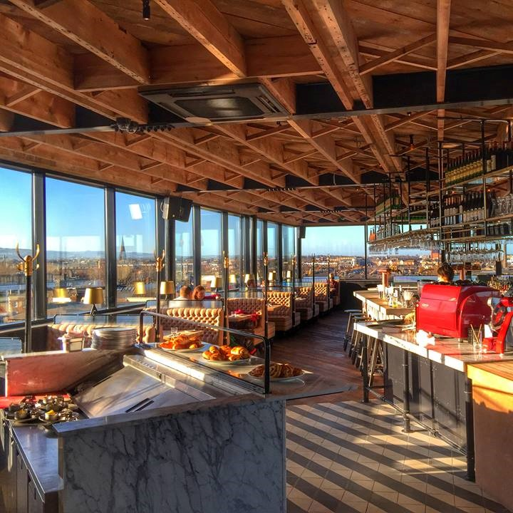
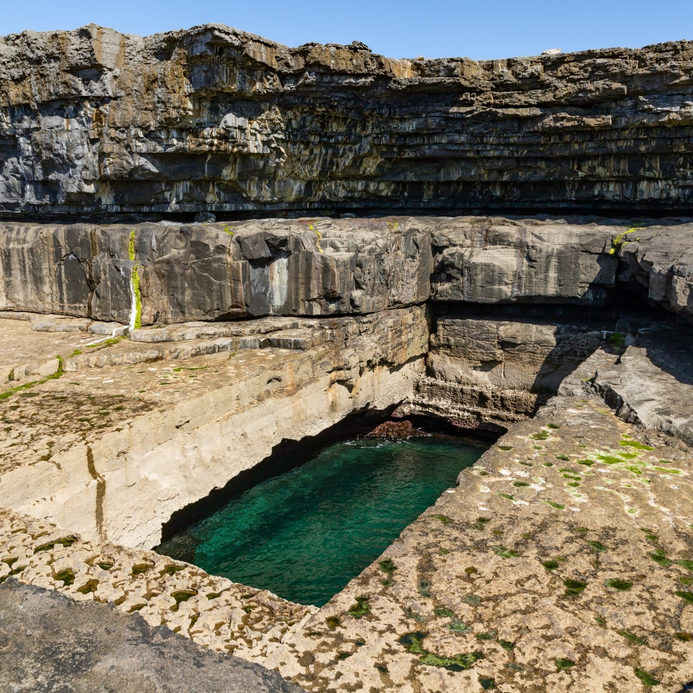
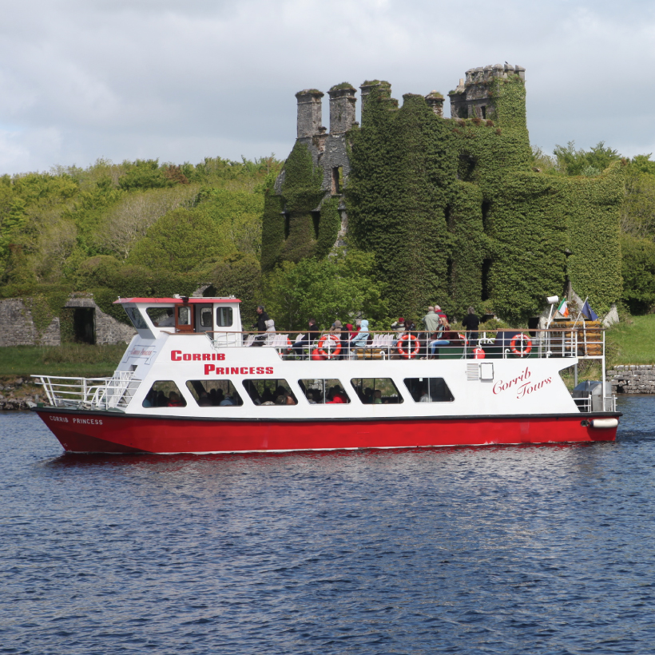
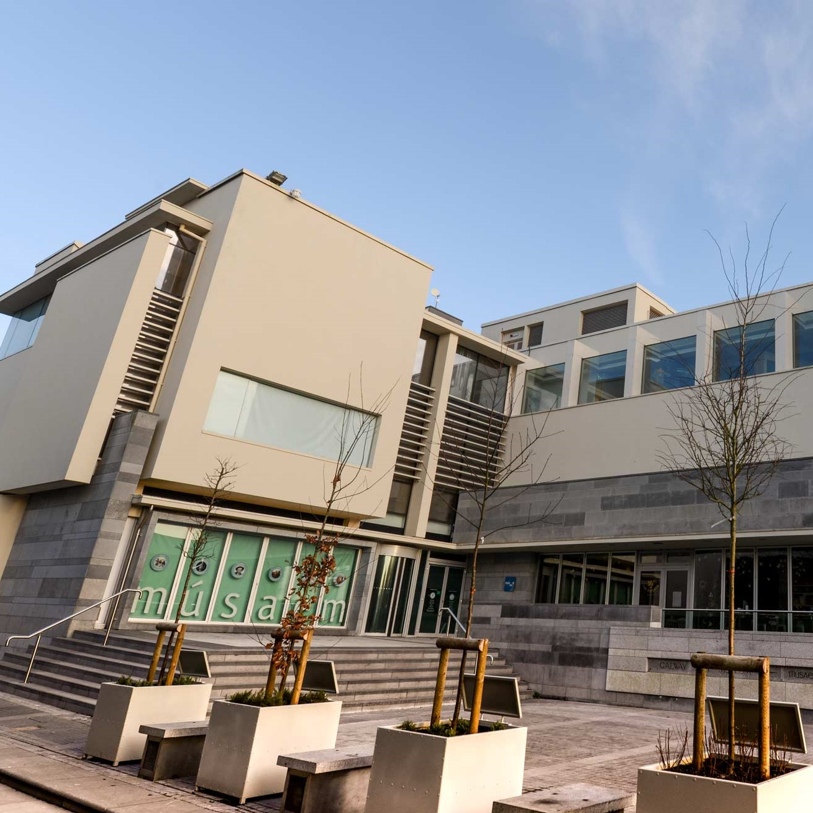
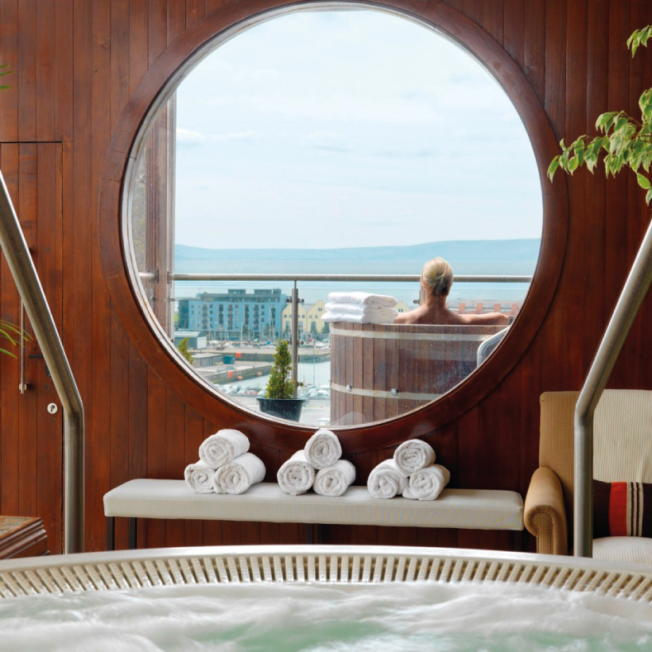

Virtual Reality World
A new Virtual Reality gaming arcade is opened in Galway. Virtual Reality World is located in the Liosban
Business Park and provides a fun place for people of all ages, interests and skill levels


Hyde Bar Galway
HYDE combines friendly and attentive service, a menu bursting with local flavours, killer cocktail and
chic-but-casual ambiance. Perfect for when you are staying in or passing through Galway.

Salthill Promenade
Salthill is a seaside resort on the northern shore of Galway Bay, its beach consists of a series of small
rocky and sandy stretches. Salthill Promenade offers views of the nearby harbour city of Galway and the
Aran Islands, making it the ideal location for a nice walk.

Galway Christmas Market
Galway City is a cracking spot to spend a couple of days, regardless of what time of the year it
is.However, the arrival of the Galway Christmas markets each year in late November adds another layer of
brilliance to the city and is a highly recommended by locals.

DNA
Dna has everything to make your night cheerful. Located on the ideal location of the city makes it even a
more desirable place to visit. Several wonderful features of Dna night club add up to create a
voyeuristic and coveted atmosphere for all the party animals.

The Dough Bros
A Warm, casual place offering an array of wood-fired pizzas with creative toppings & craft beers. This
spot is highly rated and has some really talented chefs.

Sophie's Rooftop
Soak in the views whilst you dine at Sophie’s rooftop restaurant, complete with amazing panoramic views
of Galway City, whatever the weather.Sophie's serves breakfast, lunch and dinner daily with a delectable
brunch menu on the weekends.

Poll na bPéist
Although you’ll often hear it referred to as ‘the Serpent’s Lair’, the official name for one of the Aran
Islands most unique attractions is ‘Poll na bPeist’.Although the finely-cut edges would lead you to
believe that this is a man-made swimming pool, it was in fact formed naturally. This has become quite
the popular spot for divers and swimmers and was the first stop on the 2017 Red Bull Cliff Diving World
Series.

Corrib Princess River Cruise
The Corrib Princess is a luxury cruise boat departing from Galway City Centre on the Wild Atlantic Way.
They offer daily guided sightseeing trips, private evening cruises with dinner and entertainment. This
is a chance to experience the Corrib River and lake.

Galway City Museum
Galway City Museum is a repository for objects of cultural heritage related to the city of Galway and its
people, past and present, making it the perfect spot to do some learning about this corner of our
island's history while in the area.

The Hardiman
Standing proudly on the famous Eyre Square since 1852, The Hardiman Hotel offers a polished, upscale
hotel expierience, perfect for those who like to treat themselves once in a while. They've even got
jacuzzis